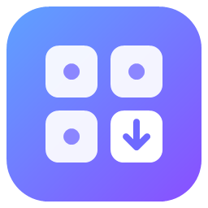
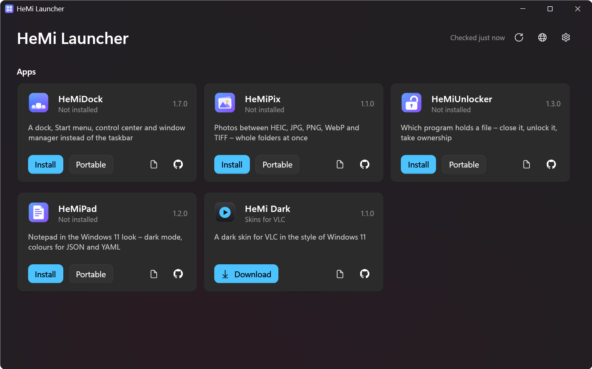
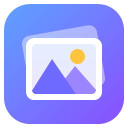

All HeMi apps.
One launcher.
HeMi Launcher installs the HeMi apps with one click and keeps them up to date on its own – quietly, in the background. Free and open source.
Windows 10 / 11 · x64 and ARM64 · More about the launcher →

The apps
All in the launcher – or each on its own, as an installer or a portable zip.

HeMiDock
A dock, Start menu, control center and window manager in place of the Windows taskbar.

HeMiPix
Converts photos between HEIC, JPG, PNG, WebP and TIFF – whole folders at once, smaller and cropped if you wish.

HeMiUnlocker
Shows which program holds a file or folder that cannot be deleted or moved, closes it, or takes ownership.
HeMiPad
A light replacement of Notepad with dark mode, colours for JSON and YAML, and spell check – no internet at all.

HeMi Dark
A dark skin for VLC media player in the style of Windows 11 – nine colours, every display scaling.
The same rules for all
Free and open source
MIT license, all code on GitHub, every download built from it in the open.
No ads, no tracking
No telemetry and no accounts; HeMiUnlocker and HeMiPad never go online at all.
The look of Windows 11
Light and dark, the accent colour of Windows, Mica – they fit in instead of standing out.
Small and light
One small program each, quick to start, nothing running that you did not ask for.